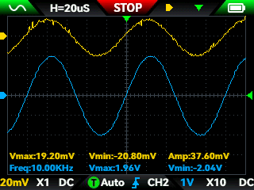
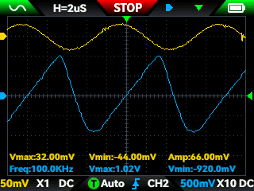

Outline
Project Description
The purpose of this project was to develop an amplifier using discrete bipolar junction transistors (BJTs) and basic stage topologies that can be powered using a single supply. The amplifier will have built-in feedback to allow for manual gain adjustment from 1 to 101. Simplicity and quality of the signal are the main parameters to be optimized. Cost, size, and power efficiency are secondary design considerations. Once the amplifier is simulated and tested, a printed circuit board (PCB) will be implemented for the circuit.
Design
The design is divided into two parts. The circuit design gives a high-level overview of the amplifier circuit. The stage details give more in-depth details on the analysis and thought process of each of the stages.
Amplifier Schematic
A schematic of the final design using KiCad is shown in Figure 1. The design went through several iterations, and it was decided to use four transistor stages. The amplifier consists of a differential input stage, followed by an emitter follower buffer, a common-emitter gain stage, and a final emitter follower output stage. All transistors were implemented using 2N3904 BJTs. These transistors are well-suited for low-power amplification due to their high current gain, which was important in this application. Since the output of the amplifier feeds back to node FB, transistor QD2 acts as the inverting input node, while QD1 serves as the non-inverting input. The circuit is configured to operate similarly to a non-inverting amplifier using feedback.

The input signal connects to screw terminal J1 and passes through coupling capacitor CC1. The purpose of the coupling capacitor is to pass the AC signal to the rest of the amplifier without disturbing the DC biasing conditions of the stages. There are a total of five coupling capacitors in the circuit, each with a value of 220 μF. This size was to ensure minimal attenuation of low-frequency signals, while the size of the component isn’t too big.
Screw terminal J2 is for the input power. The circuit is designed to run off a single 15 V supply. The input power passes through a voltage divider formed by resistors RD1 and RD2 and is used to establish the bias voltage for the input transistors. Capacitor CC2 connected to the VREF node is used to filter any noise that the power supply may have, so it doesn’t interfere with the signal to be amplified. The capacitor also has the added benefit of the input signal only needing to pass through a single resistor to get to AC ground. This results in a more predictable input impedance. After the input power is filtered, the undisturbed bias currents can pass through the base resistors RB1 and RB2.
The output of the signal is passed through an RC high-pass filter formed by capacitor CC4 and resistor RL1. The cutoff frequency is chosen with a low value of 0.07 Hz to preserve all AC components in the signal. The output is fed back through coupling capacitor CC5 and 1 MΩ potentiometer RF1 to the inverting terminal. The variable resistor allows for a closed loop gain from 1–101. The coupling capacitor is especially useful here because the DC voltage on both sides of the capacitor are different. This capacitor allows the voltages to be different.
Stage Details
A cutout view of the first stage is provided in Figure 2. The differential pair BJTs are biased through a current mirror formed by transistors QM1 and QM2 providing a total tail current of 200 μA (100 μA per transistor). The emitter degeneration resistors RE1 and RE2 are used to stabilize operation under variations in bias conditions and transistor gain. Resistors RC1 and RC2 are used to provide decent gain while also leaving some leeway for the bias conditions not to saturate.

The output of the differential pair is taken single-ended at the noninverting side as the input to the first buffer stage. This stage is highlighted in Figure 3. The output is taken from the non-inverting side to maintain negative feedback. This buffer stage is necessary so that the following common emitter stage does not load the output of the differential pair stage. Without the buffer, the overall open loop gain will diminish significantly. The stage is biased by resistor RE3 with around 500 μA.

The output of the emitter follower connects to the input of the common emitter BJT as shown in Figure 4. This stage is responsible for most of the gain. The stage is biased by a separate current mirror formed by transistors QM3 and QM4 providing a current of about 1 mA. Resistor RE4 acts as emitter degeneration for the DC bias conditions. Capacitor CC3 couples the AC signal to ground. This capacitor is necessary to bypass the emitter degeneration and increase small-signal gain. The two capacitors and resistor located between the base and collector terminals acts as a Miller compensation network used to set the dominant pole of the open-loop response. The compensation network also influences the slew rate, which is limited by the available charging current of the compensation capacitor. The slew rate of the amplifier was calculated to be around 0.5 V/μs. The collector resistor RC3 was chosen for high gain while also allowing large signal swing in the output. This stage is the main bottleneck in terms of the largest voltage swings that can occur at the output.

The collector terminal of the common emitter stage connects to the class A output stage as seen in Figure 5. Class A stages provide excellent signal integrity and low distortion since the transistors conduct continuously. The primary drawback of this topology is higher power consumption. The quiescent bias conditions cause the majority of the power dissipation in the amplifier. This stage is biased by resistor RE5 with a current of about 2.2 mA.

Approximations for voltage gain, input resistance, and output resistance for each stage are shown in Table 1. These calculations are based on the isolated versions of the stages and are based on theory and simulations. The current gain was assumed to be 200. Loading of successive stages are not considered in the table. The resistances were designed such that loading is minimal, which is consistent with the table.
| Stage | Current | Voltage Gain | Input Resistance | Output Resistance |
|---|---|---|---|---|
| Differential Pair | 200 μA | -39 | 150 kΩ | 100 kΩ |
| Emitter Follower | 500 μA | 0.99 | 1.4 MΩ | 50 Ω |
| Common Emitter | 1 mA | -324 | 5 kΩ | 10 kΩ |
| Output Follower | 2.2 mA | 0.99 | 400 kΩ | 10 Ω |
Simulation
The simulation is divided into two categories. The open-loop performance is necessary to assess the amplifier as a whole. The closed-loop performance is needed to assess the noninverting amplifier topology that the project is based on.
Open-Loop Performance
Two tests were of interest with the feedback disconnected. The first was analyzing the DC bias conditions to verify consistency between theoretical predictions and simulation results. The bias currents are shown in the table above, and the bias voltages can be calculated using Ohm’s law. Since the currents aligned closely with the design, the voltages also matched well. The second test involved looking at the frequency response of the amplifier. The circuit that was used for simulating the open-loop response was created in LTspice and is shown in Figure 6.

After the AC simulation was run, the open-loop gain was plotted as shown in Figure 7. As can be seen, the gain peaks at approximately 100 Hz with a magnitude of 81.4 dB (voltage gain of 11,700). This gain is fairly consistent with the product of all the gains from Table 1. There is about 5% loss in gain due to the loading of the stages. There are two low-frequency poles around 0.1 Hz and 20 Hz. These poles are caused by the coupling capacitors. The larger these capacitors are, the further back these poles are located. There are also two high-frequency poles around 700 Hz and 80 kHz. The 700 Hz pole was placed by the Miller impedance, and the 80 kHz pole is likely due to parasitic capacitances in the transistors. The unity gain frequency is right around 1 MHz. There is some concern in the second pole located before the unity gain crossover. This observation leads to varying gain-bandwidth products (GBW), which will be investigated later.

Closed-Loop Performance
There are four key tests for the closed-loop performance. The four tests are input impedance, output impedance, frequency response of the output, and loop gain. Since all four tests are dependent on the feedback resistor (resistor Rf in LTspice), each test is simulated using four different resistor values. These resistor values are 0 Ω, 10 kΩ, 100 kΩ, and 1 MΩ. These resistors correspond to closed-loop gains of 1, 2, 11, and 101, respectively.
The first test was to determine the closed-loop input impedance of the amplifier. The LTspice circuit is the same as Figure 6, except that the feedback is now connected. The resulting plots of the simulation are shown in Figure 8. During the full operation of the amplifier, the input impedance is constant at 10 kΩ for each of the four cases considered. This is no surprise, as the input impedance is equal to the resistor RB1 attached to the noninverting terminal. The small-signal input impedance of the stage is high, as shown in Table 1, but this is all dominated by RB1 seen in parallel with it. This is a drawback of the chosen biasing network in the single-supply topology.

The second test is closed-loop output impedance. The LTspice circuit is similar to Figure 6, except for three differences: the feedback is connected, the input AC source is set to zero, and a test AC source is placed at the output. In addition, two iterations of the test were performed. One test with the output capacitor and one without. The capacitor is required to filter out the DC component of the output, but it heavily influences the output impedance. If the circuit were required to drive a load, such as a speaker, a much larger capacitor would need to be used, which would shift the behavior closer to the ideal (capacitor-free) case at lower frequencies. The results of these tests are shown in Figures 9 and 10.


The output impedance of the first plot is dominated by the impedance of the capacitor up until 2 kHz, before its impact is negligible. The output impedance stays below 10 Ω from 70 Hz to 60 kHz. The impedance stays below 5 Ω from 200 Hz to 30 kHz. The smaller the feedback resistor, the further the upper frequency is located. This is consistent with the discussion of loop gain discussed soon. The plot with the capacitor removed shows far superior performance. The impedance stays below 0.5 Ω from 40 Hz to 5 MHz. These results highlight the drawback of the capacitor.
The next test was to assess the frequency responses at the output. The setup is identical to Figure 6 with feedback connected. The plots of the closed-loop gains are shown in Figure 11. As expected, the smaller resistors have a larger bandwidth. Since the top curve incorporates the most feedback the amplifier can provide, it makes sense to use this curve to determine the bandwidth of the full operation. The lower 3 dB bandwidth is located at 0.2 Hz, and the upper 3 dB bandwidth at 100 kHz. It is important to note the difference in GBW between the curves. The top curve has a GBW of 10 MHz, and the blue curve has a GBW of 2.8 MHz. This phenomenon is almost certainly due to the second higher frequency pole.

The final test was to determine the loop gain. The setup for this test uses the replica circuit method with voltage and current injection. The two circuits needed for the simulation are shown in Figures 12 and 13. High loop gain is important for closed-loop performance. Loop gain is defined as the product of the open-loop gain and the feedback factor. The feedback factor is inversely proportional to the feedback resistor. If the loop gain is too low, the closed-loop output impedance will increase, and the closed-loop gain will be lower than expected.


The plots of the loop gains and phases for the four cases are shown in Figure 14. The solid lines representing the gains all peak around 100 Hz because that is where the open-loop gain is at a maximum, as shown in Figure 7. The curves are ordered top to bottom based on the feedback factor. The lower the resistor, the higher the feedback factor and the more loop gain present. The dotted lines represent the phase. The phase of the loop gain directly correlates to the phase margin of the system. The lowest phase margin observed is around 32 degrees. It is interesting to note that the smallest phase margin occurred with the 10 kΩ feedback resistor, and the phase margins at unity feedback and maximum feedback were 71 degrees and 62 degrees, respectively.

Build
The first stage of the build process was to build a prototype of the amplifier and test the basic functionality. After verifying measurements, the circuit board can be laid out for fabrication. The system can then be soldered and tested more rigorously.
Prototyping
Once the circuit was finalized, a prototype was constructed on a breadboard and was evaluated using a power supply, function generator, and oscilloscope. Figure 15 shows a photo of the setup. The DC currents and voltages were all measured to see if they aligned with the LTspice calculations. All measurements were close to the simulation. The frequency response was then tested to determine closed-loop gain, bandwidth, and GBW parameters at various operating points. There were some discrepancies from prototype to simulation, likely caused by slight shifts in the upper frequency poles. More data is collected on the final circuit board to analyze these differences.

Circuit Board Layout
The layout of the PCB on KiCad is shown in Figure 16. All parts used for the board use through-hole technology (THT) devices and were sourced from components already in-house. The components are spread out in an even fashion consistent with the schematic. The top plane was used as 15 V power, and the bottom plane was ground. Most traces were located on the top plane, with only three traces needed on the back plane. No vias were needed since all through holes were copper-plated. A 3D model of the PCB with models of all the components is shown in Figure 17.


Final Testing
Once the circuit board was manufactured, the components were soldered to the board. Figure 18 shows a picture of the final product. Some additional data was collected relating to bandwidth and slew rate, which are discussed next.

The closed-loop gain was plotted as a function of frequency for two test cases and compared to the LTspice simulation from Figure 11. The results are plotted in Figure 19. Data collection was limited due to function generator, slew rate, and output swing constraints. An estimate for GBW is 4 MHz based on both test cases. More data needs to be collected at smaller gains because this value is expected to decrease due to the influence of the second high-frequency pole. An estimate for bandwidth is 40 kHz from the max closed-loop gain case.

Some images saved by the oscilloscope are provided. The yellow curves are the input signal, and the blue curves are the amplified signals. Figure 20 shows a full output swing of -2 V to +2 V with no visible distortion. The potentiometer is also set to maximum gain of around 100. Figure 21 shows a high-frequency and high-amplitude signal that is distorted. This picture verifies the slew rate of 0.3 V/μs, which is slightly less than the prediction of 0.5 V/μs.


Based on all these results, a collection of performance parameters was finalized and highlighted in Table 2. The power consumption measurement is an approximation based on simulations. The output impedance is defined within the bandwidth region. The phase margin depends on the closed-loop gain setting.
| Input Supply | +15 V |
| Power Consumption | 120 mW |
| Output Swing | -2 V to +2 V |
| Slew Rate | 0.3 V/μs |
| Open Loop Gain | 81 dB |
| Closed Loop Gain | 1 – 101 |
| Input Impedance | 10 kΩ |
| Output Impedance (w/ cap) | < 20 Ω |
| Output Impedance (w/o cap) | < 1 Ω |
| Gain-Bandwidth (GBW) | 4 MHz |
| Closed Loop Bandwidth | 0.2 Hz – 40 kHz |
| Phase Margin | 32 – 71 deg |
A demo of the amplifier under testing is shown in Video 1. This video illustrates the variable gain, output swing, slew rate, and bandwidth limitations. The function generator used for the screenshots and video (~$30) exhibits significant noise at low-amplitude signals. Testing at higher gains is limited with clean input signals for this reason, and due to the output swing limitation. Also, there is a transient settling effect observed on the oscilloscope when large output swings occur from either the gain potentiometer or the amplitude of the function generator. This delay causes the DC level of the output to swing and is due to the transient response of the large capacitors.